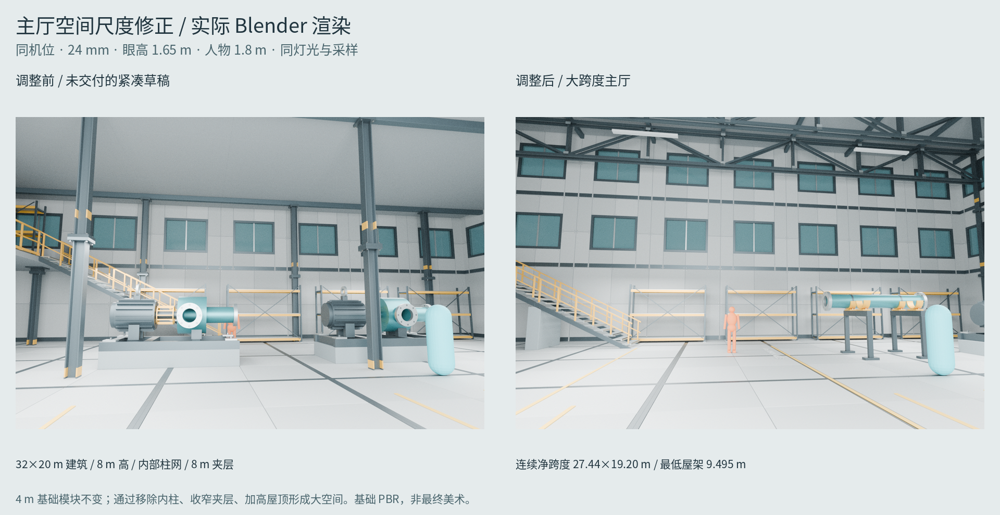
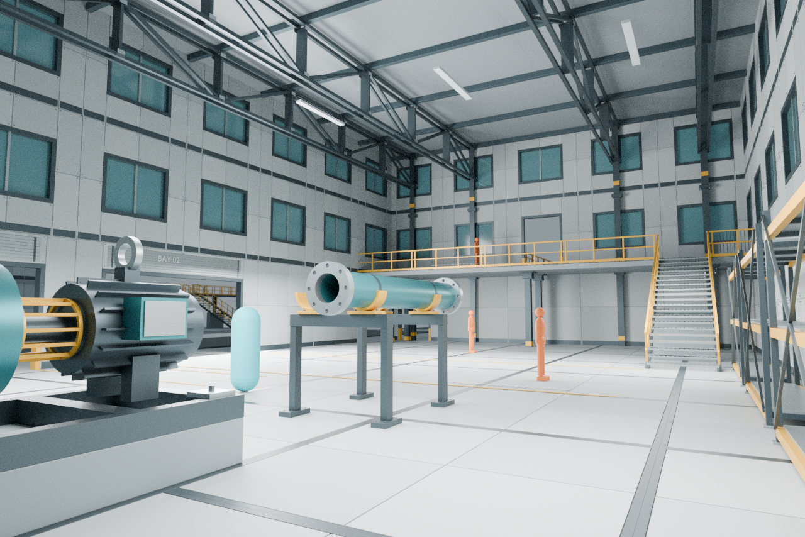
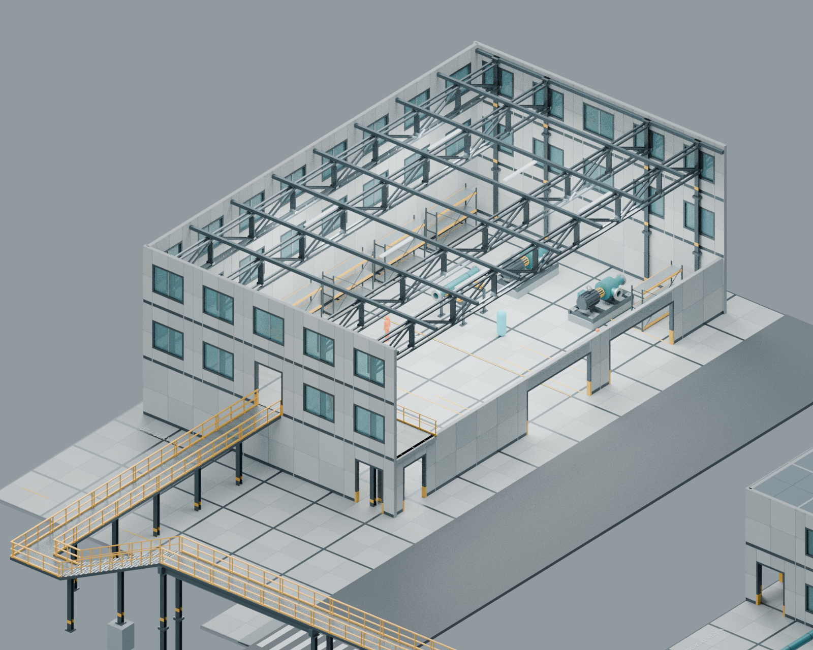
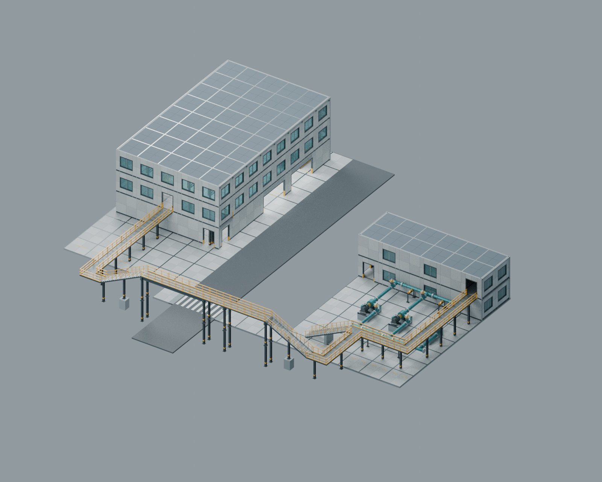
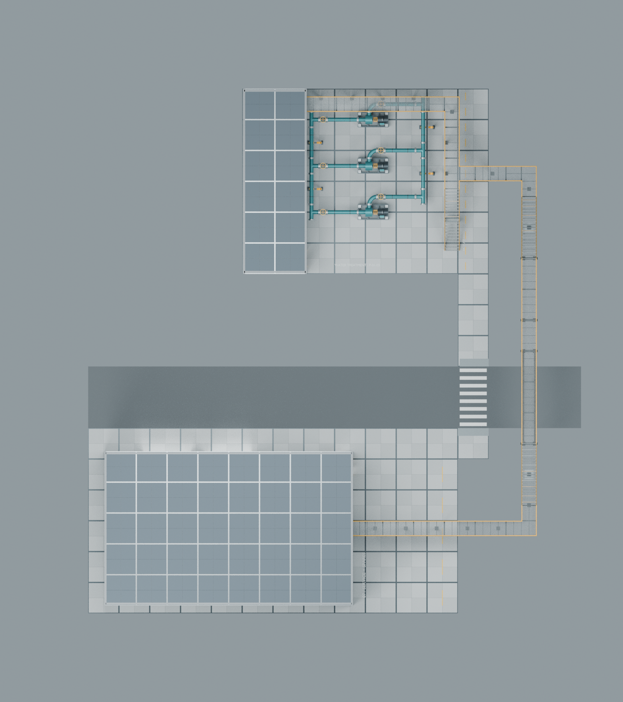
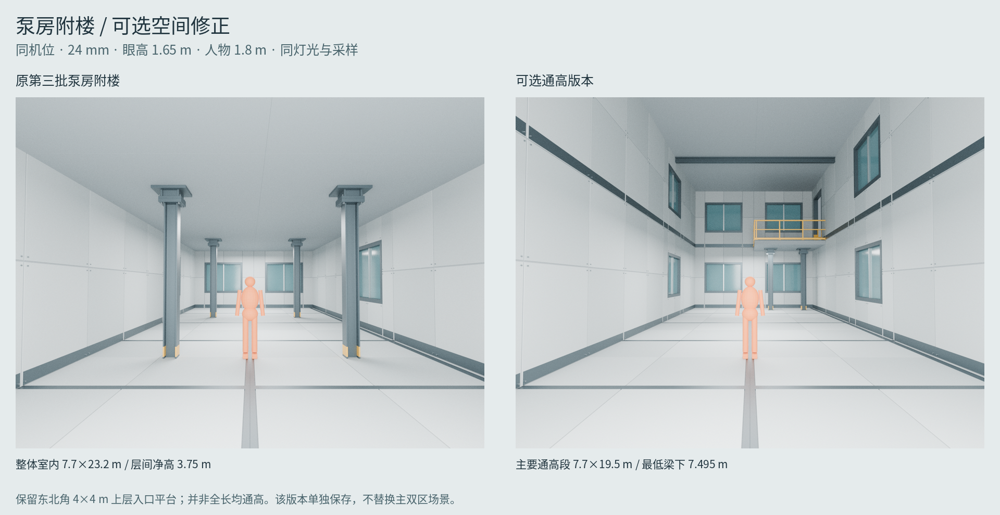
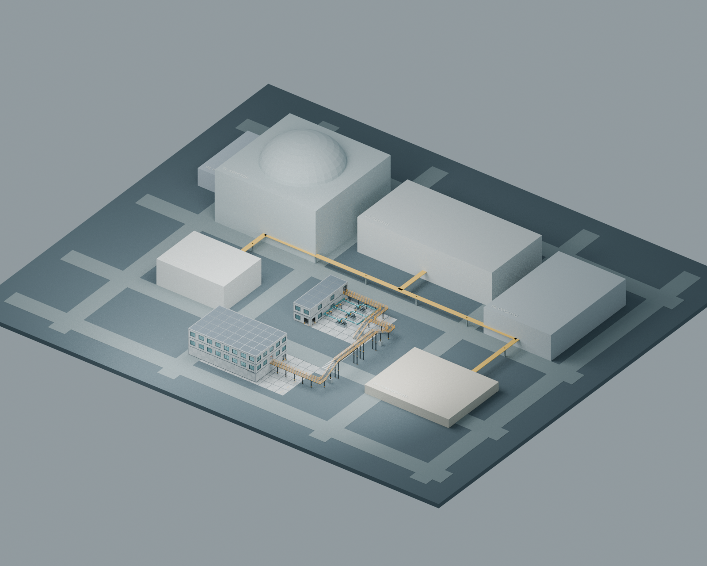
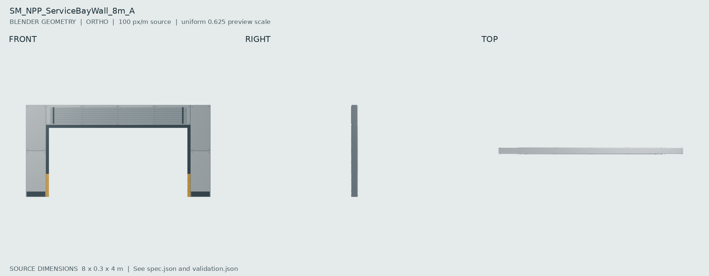
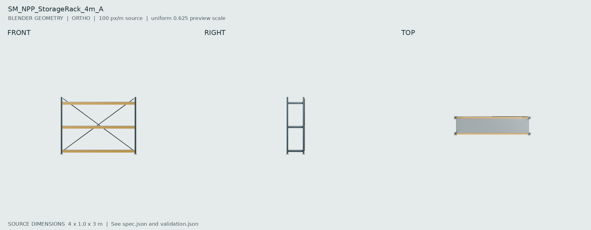
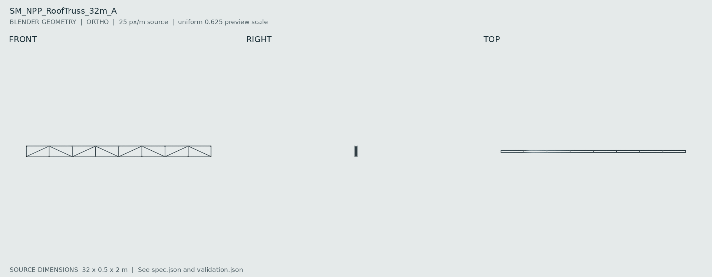

NPP / SECTOR K-17 / BATCH 04 LARGE SPACE大跨度主厅与真实双区动线
主厅连续净跨度约 27.44×19.20 m，最低屋架净高 9.495 m，中央主通道宽 6 m。泵区与物流区由地面和跨路高架连接。4 m 模块保持原尺寸；其他 6 个功能区仍为灰盒。基础 PBR，非最终 AAA 场景。
使用说明 · 双区场景 · 全站上下文 · 可选通高泵房 · 验收摘要
同机位室内尺度对比

大跨度横向视角 / 24 mm，眼高 1.65 m

去顶剖视：夹层和主通道

双区与高架连接

实际组合俯视

可选泵房通高对比

全局上下文：两个区域已替换

SM_NPP_ServiceBayWall_8m_A
[8, 0.3, 4] m · 22,568 triangles · PASS

Blender · FBX · GLB · Spec · AI 外观参考
SM_NPP_StorageRack_4m_A
[4, 1.0, 3] m · 8,628 triangles · PASS

Blender · FBX · GLB · Spec · AI 外观参考
SM_NPP_RoofTruss_32m_A
[32, 0.5, 2] m · 7,020 triangles · PASS

Blender · FBX · GLB · Spec · AI 外观参考